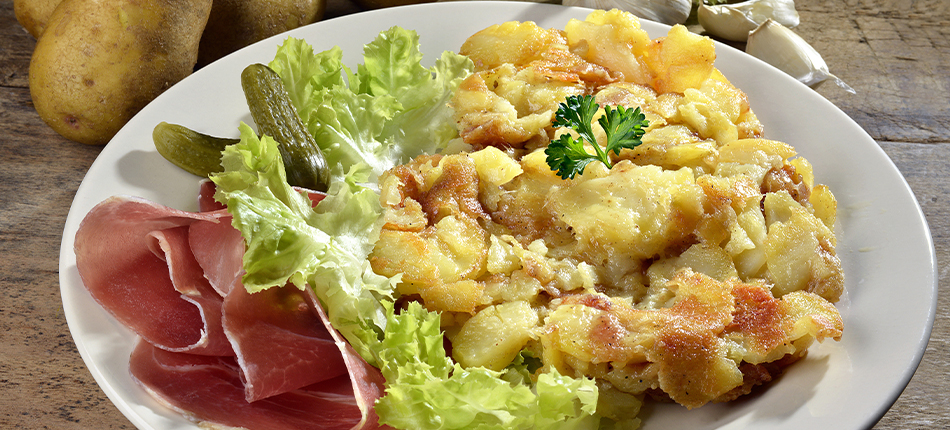

Truffade!

Description
La truffade est un plat emblématique de la cuisine auvergnate, originaire du Cantal et des montagnes d’Auvergne. Ce mets rustique et réconfortant se compose essentiellement de pommes de terre rissolées dans de la graisse de canard ou d’oie, auxquelles on ajoute de la tomme fraîche de Cantal qui fond en longs filaments irrésistibles. Né dans les fermes et les burons des bergers, il était autrefois un repas complet et énergétique pour affronter le froid des plateaux volcaniques. Aujourd’hui encore, il incarne l’authenticité et la simplicité de la gastronomie paysanne française.
Sa texture unique – croustillante sur les bords et fondante, filante au cœur – en fait un plat convivial et généreux, parfait pour les repas d’hiver. On le sert traditionnellement bien chaud, accompagné de jambon cru d’Auvergne, d’une salade verte et parfois de cornichons pour équilibrer sa richesse. Simple à réaliser mais riche en saveurs, la truffade reste un classique incontournable des tables auvergnates et un véritable symbole de terroir.
Ingrédients
- 1,2 kg de pommes de terre à chair ferme (type Bintje, Belle de Fontenay ou Charlotte)
- 500 à 600 g de tomme fraîche de Cantal (ou de Salers, bien fraîche pour qu’elle file bien)
- 3 à 4 gousses d’ail
- 3 à 4 cuillères à soupe de graisse de canard ou d’oie (ou à défaut : saindoux, ou un mélange beurre + huile neutre)
- Sel et poivre du moulin
- NB : À servir traditionnellement avec : jambon cru d’Auvergne (ou de pays), salade verte et éventuellement des cornichons.
Etapes de préparation
- Épluchez les pommes de terre, lavez-les rapidement puis séchez-les bien dans un torchon propre.
- Coupez les pommes de terre en rondelles ou en petits morceaux réguliers d’environ 4-5 mm d’épaisseur.
- Écrasez ou hachez finement les gousses d’ail (selon votre goût pour l’ail).
- Ajoute la viande hachée et fais-la cuire en mélangeant bien.
- Coupez la tomme fraîche en fines lamelles ou petits morceaux pour qu’elle fonde plus facilement.
- Dans une grande poêle ou une sauteuse (idéalement en fonte), faites chauffer la graisse de canard à feu vif.
- Ajoutez les pommes de terre, salez légèrement et poivrez, puis faites-les rissoler en remuant régulièrement pendant 10-15 minutes jusqu’à ce qu’elles soient bien dorées.
- Baissez le feu à moyen-doux, couvrez partiellement et laissez cuire doucement encore 15-20 minutes en remuant de temps en temps, jusqu’à ce que les pommes de terre soient tendres à l’intérieur mais encore un peu fermes.
- Incorporez l’ail haché, mélangez bien et laissez cuire 2-3 minutes supplémentaires pour parfumer.
- Ajoutez les lamelles de tomme fraîche en les répartissant sur les pommes de terre.
- Mélangez délicatement à feu doux jusqu’à ce que le fromage fonde complètement et forme de beaux filaments (ne remuez pas trop fort pour garder la texture filante typique).
- Rectifiez l’assaisonnement en sel et poivre si nécessaire, puis servez bien chaud immédiatement.
Home